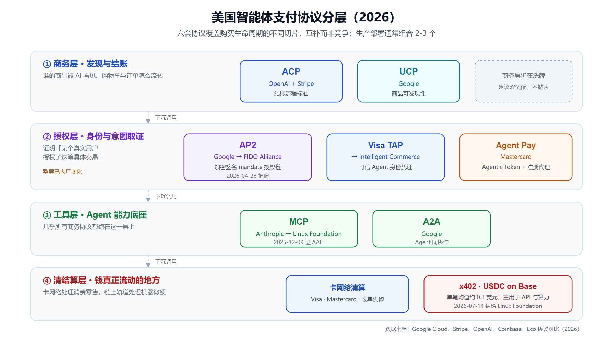
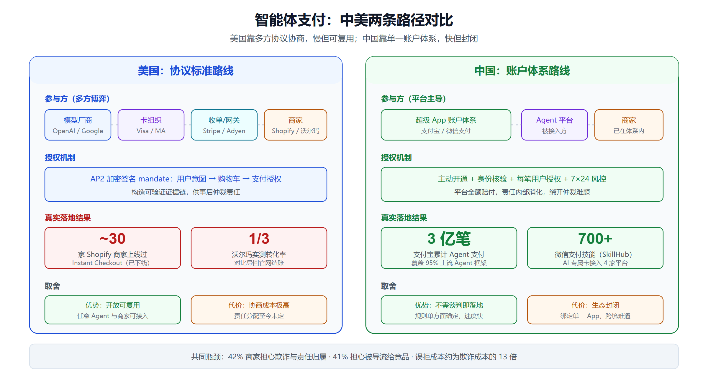

智能体支付的中美两条路：30 家商家 vs 3 亿笔交易
一个下线事故，和一个 3 亿笔
2026 年 3 月 4 日，OpenAI 悄悄对 Shopify 商家关掉了 Instant Checkout——那个 2025 年 9 月高调发布、号称要让"百万级商家"在聊天窗口里完成收款的功能。Forrester 分析师 Emily Pfeiffer 和 Sucharita Kodali 在三天后撰文披露了这件事，并给出一个更扎心的数字：真正上线过的 Shopify 商家，大约 30 家。
同一时期的另一组数字来自杭州。支付宝的 AI 付在 2026 年 2 月用户破 1 亿；到 5 月 26 日蚂蚁发布 AI Wallet 和 Token Pay 时，官方口径是累计完成 3 亿笔 AI Agent 支付，覆盖约 95% 的主流 Agent 框架。
30 家商家，和 3 亿笔交易。这不是"谁更领先"的问题——两边根本没在解同一道题。美国在解多方协作下的信任与责任分配，中国在解单一账户体系内的授权与风控。前者慢、吵、但结果可复用；后者快、稳、但绑死在超级 App 上。
本文旨在将两条路的技术选择、真实数据、瓶颈和未来三年的走向讲清楚。
一、先说清楚：智能体支付到底难在哪
智能体支付（Agentic Payments）指的是：AI Agent 代替用户完成从搜索、比价到下单付款的完整流程。听起来只是"把结账按钮自动化"，但它打碎了在线支付过去二十年的一个基础假设——付款那一刻，屏幕前坐着一个人。
这个假设一旦不成立，四个问题同时暴露：
- 身份问题：商家怎么知道来的是一个合法 Agent，而不是爬虫或攻击脚本？
- 授权问题：用户说的是"帮我买瓶洗发水，50 块以内"，Agent 实际下单了一瓶 68 块的。这算不算用户授权过？
- 责任问题：Agent 下错单、买错型号、重复下单，谁赔？商家、Agent 厂商、卡组织，还是用户自己？
- 风控问题：传统反欺诈的核心信号是"人类行为特征"——鼠标轨迹、停留时间、打字节奏。Agent 全部不具备。收紧规则会误杀真实交易，放松规则会放进欺诈。
Adobe Analytics 的数据说明这不是假想题：2024 年 7 月到 2025 年 7 月，美国零售网站的生成式 AI 流量同比涨了 4700%。流量已经来了，规则还没写。
中美的分歧就从这里开始：美国选择先写规则，中国选择先改账户。
二、美国路线：六套协议，先立规矩再上车
2025 年 9 月是个密集发布窗口，一个月内几套标准同时落地。到 2026 年 4 月，业界基本形成了"六协议分层"的共识格局。

各层分别在干什么
工具层：MCP（Anthropic）
Model Context Protocol 负责让 Agent 发现并调用外部工具和数据。它本身跟支付无关，但几乎所有商务协议都跑在它上面。MCP 于 2024 年 11 月开源，2025 年 12 月 9 日捐给 Linux Foundation 旗下的 Agentic AI Foundation（由 Anthropic、Block、OpenAI 共同创立）。
商务层：ACP 与 UCP
- ACP（Agentic Commerce Protocol，OpenAI + Stripe 共同开发，Apache 2.0 开源）：管的是 checkout 流程本身——买家、代理它的 Agent、卖家之间怎么交换购物车、库存、订单状态。它明确不碰底层支付轨道。
- UCP（Universal Commerce Protocol，Google）：管的是商品在 AI 界面里怎么被发现。本质上是"给 AI 看的商品目录标准"。
授权层：AP2 与 Visa TAP
- AP2（Agent Payments Protocol，Google，2025 年 9 月 16 日发布）：这层是整套架构里最关键的创新。它用加密签名的 mandate（授权凭据）来证明"某个真实用户授权了这笔具体交易"——把用户意图、购物车内容、支付授权分别签名，形成一条可验证、可审计的证据链。AP2 是支付方式无关的，卡、稳定币、实时银行转账都能挂上去。Visa 和 Mastercard 在发布当月就加入。2026 年 4 月 28 日，Google 把 AP2 捐给了 FIDO Alliance——这个动作值得注意，FIDO 是做无密码身份认证标准的组织，说明 AP2 被定位成身份与授权标准，而不是支付产品。
- Visa TAP（Trusted Agent Protocol）：给 Agent 发身份凭证，让商家能识别"这是一个注册过的可信 Agent"。后来演进为更大的 Visa Intelligent Commerce 计划。
- Mastercard Agent Pay：思路类似，用 Agentic Token（代理专用支付令牌）+ 注册代理机制 + 网络侧可见性三件套。
清结算层：传统卡网络，加上新出现的稳定币轨道（下文详述 x402）。
关键判断：这六套协议不是在竞争
这是最容易被误读的一点。ACP 管结账流程、AP2 管授权证明、UCP 管商品发现、MCP 管工具调用——它们覆盖的是购买生命周期的不同切片。一个真实的生产部署通常同时用 2-3 个：MCP 打底做工具，一个商务协议做交易流程，一个授权协议做签名取证，再挂一条清结算轨道。
想理解协议分层的一般规律，可以对照看看 MCP 与 A2A 两大 Agent 协议的深度对比——支付协议的分层逻辑和它高度相似。
治理层面的收敛动作
2026 年出现了一批明显的"去单一厂商化"动作：
- AP2 → FIDO Alliance（4 月 28 日）
- x402 → Linux Foundation（7 月 14 日）
- ACP 仍由 OpenAI 和 Stripe 作为创始维护者控制，捐给基金会只被列为"未来路径"
- 8 月 18 日，稳定币基础设施公司 Rain 发起 Agentic Payments Alliance（APA），26 家创始成员，Visa、Mastercard、Fiserv、Circle、Solana Foundation 都在里面。这个联盟的结构设计刻意排除了单一公司控制，采用成员共治
APA 要解的三个问题，恰好就是协议本身没解决的：Agent 怎么被授权、欺诈怎么被识别、积分和权益怎么跟着 Agent 的行为走。
三、现实检验：OpenAI 悄悄下线了"在聊天里付钱"
协议再漂亮，也要过转化率这一关。而这一关，第一次考试就没及格。
时间线
- 2025 年 9 月：OpenAI 上线 Instant Checkout，Etsy 和 Shopify 作为旗舰合作方。Etsy 告诉卖家美国 ChatGPT 用户可以直接在对话里浏览和购买；Shopify 承诺"一键在聊天里下单"能带来数百万新客
- 2026 年 3 月 4 日：OpenAI 悄悄对 Shopify 商家下线该功能
- 2026 年 3 月 20 日：CNBC 报道 OpenAI 转向新方案——在 ChatGPT 里做零售商专属 App，把用户导回商家自己的网站完成购买，让商家掌控体验和交易过程
沃尔玛的实测数据
沃尔玛是少数深度投入的大零售商，启用了约 20 万个 SKU。负责设计与产品的执行副总裁 Daniel Danker 给出的实测结论是：
在 ChatGPT 内直接完成支付的转化率，约为把同样的用户导回 walmart.com 完成购买的 三分之一。
但同一份数据里还有一个正面信号：ChatGPT 带来的新客率约为搜索渠道的 2 倍。
这两个数字放在一起，把结论摆得很清楚了：AI 赢的是发现和比价环节，不是收单环节。
用户行为数据完全一致
2026 年的调研数据显示，AI 在购物旅程中的使用率呈明显的前端集中：
- 商品对比环节：约 62%
- 结账环节：约 23%
- 售后环节：约 19%
行业口号也随之改了——从最初的 "in-chat checkout"，变成了现在的 "Discover in AI, Buy on Site"（在 AI 里发现，回站内购买）。
这个转向对做 AI 搜索优化的团队反而是好消息：既然发现环节的价值被验证了，品牌在 AI 回答里的可见性就更值钱。相关方法论可以参考 AI 搜索时代的 GEO 与品牌引用 ROI。
四、中国路线：不谈协议，先改钱包
中国这边几乎没有"协议标准之争"的戏码。原因很直接——支付宝和微信支付本身就是账户体系的所有者，不需要跟别人谈判就能改规则。
支付宝：从 AI 付到 AI Wallet
AI 付（AI Pay）：用语音指令让 Agent 代为支付。2026 年 2 月用户突破 1 亿。
2026 年 4 月 21 日，AI 付宣布支持 OpenClaw 这类通用 Agent 代付。风控设计值得细看，因为它和 AP2 的思路截然不同：
- 需要用户主动开通 + 身份核验
- 每笔支付都需要用户授权
- 7×24 智能风控系统覆盖每笔交易
- 纳入支付宝原有的"全额赔付"账户安全计划
最后一条是关键。美国那套协议花大力气用密码学构造"授权证据链"，为的是在纠纷时能证明责任归属；支付宝直接跳过这个问题——平台先赔，责任内部消化。这是只有账户所有方才能选的解法。
2026 年 5 月 26 日，蚂蚁发布全栈 AI 支付基础设施：
- AI Wallet：消费者侧的控制面板。事前设定和管理 Agent 任务、事中监控授权、事后复盘消费分析。在支付宝 App 里搜"AI Wallet"就能用
- Token Pay：面向 AI 模型厂商的结算产品，处理订阅、Agent 内 Token 充值、以及复杂的微交易场景
发布会上蚂蚁 CEO 韩歆毅给了一句定调："Agent 执行支付，Token 承载价值。"同时公布的数据是累计 3 亿笔 Agent 支付、覆盖约 95% 的主流 Agent 框架，并在推进自研的 ACT（Agentic Commerce Trust Protocol）。
注意 ACT 这个动作——中国厂商也在做协议，但顺序是先把量跑起来，再把接口标准化，和美国"先立标准再招商"完全相反。
微信支付：AI 专属卡 + 技能市场
腾讯的路径更偏"额度卡 + 技能"模型：
- 2026 年 3 月 22 日：腾讯推出微信 ClawBot 插件，把 OpenClaw Agent 集成进微信
- 2026 年 8 月 31 日：微信支付 AI 专属卡新增接入 DeepSeek Harness、OpenClaw 两大 Agent 平台。加上此前的 WorkBuddy、QClaw，已接入 4 家 Agent 平台
- 该卡已支持调用腾讯 SkillHub 平台上的 700 余项支付技能
"AI 专属卡"本质上是给 Agent 单独开一个受限额度的支付通道——预算隔离、权限收敛、出问题只影响这张卡。这个设计和企业给员工发额度卡是同一个逻辑，工程上比重构整套授权协议轻得多。
想了解 DeepSeek Harness 这类 Agent 运行时本身，可以看 DeepSeek Harness 开源 Agent 运行时解析。
五、两条路的结构性差异
把两边并排放，差异不在技术水平，而在约束条件。

| 维度 | 美国路线 | 中国路线 |
|---|---|---|
| 核心抓手 | 协议标准 + 卡组织规则 | 超级 App 账户体系 |
| 授权机制 | 加密签名 mandate（AP2）、代理令牌（Agent Pay） | 主动开通 + 身份核验 + 每笔授权 |
| 责任归属 | 未定，靠证据链在事后仲裁 | 平台全额赔付，内部消化 |
| 参与方数量 | 多（模型厂商、卡组织、收单、商家、Agent 平台） | 少（平台 + Agent 平台 + 商家） |
| 落地速度 | 慢（约 30 家 Shopify 商家上线过 Instant Checkout） | 快（累计 3 亿笔） |
| 可迁移性 | 高（协议开放，任意 Agent 和商家可接） | 低（绑定单一 App 生态） |
| 主要瓶颈 | 责任分配未定、转化率不及跳转 | 生态封闭、跨平台难互通 |
美国的优势和代价
优势是结果可复用。一旦 AP2 + ACP 这套东西稳定下来，任何 Agent、任何商家、任何支付方式都能挂上去，不需要向某个平台申请准入。这是真正意义上的基础设施。
代价是协商成本极高。六套协议、几十家机构、法律责任未定——Instant Checkout 只跑通 30 家商家，很大程度不是技术问题，而是每一家都要重新评估欺诈风险、拒付责任和渠道影响。
中国的优势和代价
优势是不需要谈判。支付宝可以单方面决定"每笔都要用户授权 + 平台全额赔付"，一夜之间给整个生态一个确定的规则。3 亿笔就是这么来的。
代价是封闭。这些交易发生在支付宝或微信的账户体系内，Agent 厂商是被接入方而不是平等参与方。一个海外 Agent 想给中国用户完成一笔支付，得先成为支付宝的合作伙伴——这在美国那套协议下是不需要的。
这个对比模式在 AI 领域反复出现，人形机器人的中美投资路径分化 和 AI 玩具的中美两条增长逻辑 都有类似结构：中国强在应用层铺量和供应链效率，美国强在标准制定和底层规则。
六、第三条路：x402 和稳定币轨道
除了卡网络和超级 App，还有一条完全不同的轨道在长——机器给机器付钱。
Coinbase 的 x402 复活了 HTTP 协议里那个几乎从没被用过的 402 状态码（Payment Required）。逻辑很干净：Agent 请求一个 API，服务端返回 402 和报价，Agent 用 USDC 在 Base 链上完成结算，重新请求拿到结果。亚秒级确认，Coinbase 描述单笔成本"不到一分钱的零头"。Cloudflare 和 AWS 在 2026 年 7 月已经把 x402 嵌入了边缘层。
增长数据很亮眼
- 2026 年 Q1，Base 链上的 agentic 交易累计突破 1 亿笔
- 到 2026 年 4 月 21 日，约 6.9 万个活跃 AI Agent，累计 1.65 亿笔、总额约 5000 万美元
- Coinbase 官方口径：过去一年处理 1.6 亿+ 笔 agentic payments
- Keyrock 报告（CoinDesk 2026 年 5 月 21 日）：2025 年 5 月至 2026 年 4 月，AI Agent 在链上结算约 7300 万美元、1.76 亿笔
- 结构在改善：2025 年初，单笔金额超过 1 美元的交易只占总转移价值约 49%；到 2026 年初升至 95%——说明在脱离纯微支付形态
但有两个必须说的问题
第一，估值和真实用量严重脱节。 CoinDesk 2026 年 3 月 11 日的报道给出一组扎人的对比：x402 生态估值约 70 亿美元，链上日交易量却只有约 2.8 万美元，其中很大一部分来自测试交易和刷量。Chainalysis 的分析也指出，1 亿笔那波增长中相当大比例是 meme coin farming 活动。
第二，算一下单笔均值。 5000 万美元 / 1.65 亿笔 ≈ 每笔 0.3 美元。
0.3 美元买不了一件商品，但刚好是一次 API 调用、一段模型推理、一次数据查询的价格。这才是 x402 的真实市场：不是人买东西，是机器买算力和数据。
这个判断不贬低它的价值——机器对机器的微额结算是一个卡网络根本做不了的市场（手续费结构就不支持）。但把 x402 的交易笔数拿来论证"消费者智能体支付的爆发"，是数字上的偷换概念。
七、万亿预测和真实数据之间的距离
现在把各家机构的预测放在一起看，会发现一件事：大家连在测什么都没谈好。
| 机构 | 预测 | 口径 |
|---|---|---|
| McKinsey | 2030 年全球 3-5 万亿美元 | 消费交易额 |
| Juniper Research | 2030 年全球 1.5 万亿美元 | 交易额 |
| Bain | 2030 年美国 3000-5000 亿美元（占电商 15-25%） | GMV |
| Morgan Stanley | 2030 年美国 1900-3850 亿美元（占线上零售 10%，乐观 20%） | GMV |
| J.P. Morgan | 2030 年占美国线上销售最多 25% | 占比 |
| Grand View Research | 2025 年 57 亿 → 2033 年 655 亿美元（CAGR 35.7%） | 软件/服务市场 |
| MarketsandMarkets | 2025 年 10.6 亿 → 2032 年 138.8 亿美元（CAGR 44%） | 软件市场 |
| Gartner | 独立 AI Agent 市场 2025-2030 增长 13 倍，2220 亿美元机会 | 市场规模 |
同一个 2030 年：全球交易额从 1.5 万亿到 5 万亿，差 3 倍多；软件市场从 138 亿到 655 亿，差近 5 倍。
再对照真实数据：
- 美国最激进的尝试（Instant Checkout）跑通了约 30 家 Shopify 商家就下线了
- 最深度投入的大零售商（沃尔玛）实测转化率是跳转官网的 1/3
- 链上轨道的日交易量约 2.8 万美元，单笔均值 0.3 美元
- 唯一的大体量落地在中国，3 亿笔，但发生在封闭账户体系内
⚠️ 数据说明：本领域仍处极早期，机构口径高度不统一。建议把"发现环节已验证、结账环节未跑通、中国落地量领先、责任规则未定"作为核心判断，不要纠结具体绝对值。
预测和现实之间这道口子，短期靠不了技术填，得靠规则填。
八、真正卡住的不是技术，是责任和渠道主权
如果只看协议文档，会以为剩下的都是工程活。但商家侧的调研数据指向完全不同的地方。
商家在怕什么
PYMNTS 2026 年的商家调研给出两个关键比例：
- 42% 把欺诈、纠纷和责任归属列为核心顾虑
- 41% 明确反对 Agent 把自己的客户引向竞争对手
第二条常被忽略，但它可能是更硬的墙。这不是安全问题，是渠道主权问题——商家接入一个比价 Agent，等于主动邀请一个会把自己和竞品并排展示的中间层进门。技术上再顺畅，商业上也没有动力。
沃尔玛把用户导回自己网站的选择，同时解决了转化率和渠道主权两个问题。OpenAI 转向"零售商专属 App"也是对这个诉求的回应。
责任归属仍是法律空白
- 拒付压力：全球拒付量预计从 2025 到 2028 年增长 24%，达到 3.24 亿笔。Agent 发起的交易会让"这笔是不是我授权的"这个判断变得更难
- 规则缺失：AP2 造的是"授权证据"，Agent Pay 造的是"代理身份"，但争议仲裁规则还没写完。美国立法层面基本停滞，APA 这类行业联盟在试图填空
- 消费者其实准备好了：Worldpay 的 Agentic Commerce 报告显示 45% 的消费者愿意让 AI Agent 代为完成购买，Z 世代达 54%。意愿不是瓶颈
一个反直觉的数据
商家在误拒（false decline）上的损失，据报道是欺诈损失的 13 倍。
这个数字对智能体支付非常关键：面对 Agent 流量，商家的第一反应是收紧风控规则。但如果误拒成本远高于欺诈成本，"一律拦截 Agent 流量"这个看似安全的策略，实际上可能是更贵的选择。
责任链条怎么切分，是这一轮最难也最值钱的问题。类似的责任分配困境在 AI 幻觉的责任链 里也出现过——技术能力先跑到了，法律和商业规则在后面追。
九、未来三年：三个可以下注的判断
判断一：分层会稳定，但商务层会持续洗牌
授权层（AP2 进 FIDO）和工具层（MCP 进 Linux Foundation）已经完成去厂商化，基本可以视为稳定。真正还在打的是商务层——ACP 和 UCP 谁能拿到商家侧的接入量，取决于哪家的 AI 入口能给商家带来更多真实成交，而不是协议本身谁设计得好。
对做技术选型的团队，务实的做法是：MCP 打底不用犹豫，授权层跟着卡组织走，商务层保持双适配、别提前站队。
判断二：先跑通的是重复性、低风险、低情绪价值的品类
J.P. Morgan 的判断值得采纳：多数量会集中在杂货、订阅、日常补货这类场景。原因很实在——
- 商品决策成本低，Agent 选错的损失小
- 用户已有历史购买记录，Agent 有明确参照
- 复购频率高，自动化能真正省下时间
反过来，高客单、高个性化、高情绪价值的品类（服装、礼品、3C 大件），"Agent 帮我买"本身就不是用户想要的——挑选过程就是消费体验的一部分。
判断三：中美会各自跑通，但短期不会互通
美国那套协议做出来的东西是开放但慢，中国那套账户方案是快但封闭。三年内两边都会有各自的规模化落地，但跨境互通的可能性不高——不是技术障碍，是监管、结算和责任规则三重不兼容。
对中国开发者的实际影响：如果做国内场景，直接接支付宝 AI 付或微信支付 AI 专属卡，工程量小、风控有平台兜底；如果做出海产品，得认真读 AP2 和 ACP 的规范，并做好"商家不愿意开放结账"的预案——把 Agent 定位成发现和比价工具，把结账留给商家自己的站点，这是当前被数据验证过的路径。
想系统了解企业侧 Agent 落地的整体框架，可以参考 企业 AI Agent 部署实战指南 和 Agent 治理与可观测性的隐性成本。
小结
2026 年的智能体支付，处在一个"基础设施建了一半、商业模式没验证、法律规则空白"的状态。
三个最该记住的事实：
- 美国路线：六套协议分层已经成型（MCP / ACP / UCP / AP2 / TAP），治理正在去厂商化（AP2 进 FIDO、x402 进 Linux Foundation、APA 26 家共治）。但 Instant Checkout 只跑通约 30 家 Shopify 商家就下线，沃尔玛实测在聊天内结账的转化率只有跳转官网的 1/3
- 中国路线：支付宝 AI 付累计 3 亿笔、覆盖 95% 主流 Agent 框架，微信支付 AI 专属卡接入 4 家 Agent 平台和 700+ 支付技能。靠"每笔授权 + 平台全额赔付"绕过了责任分配难题，代价是生态封闭
- 真正的瓶颈不是技术：42% 的商家担心责任归属，41% 担心被导流给竞品；误拒成本是欺诈成本的 13 倍；45% 的消费者已经愿意让 Agent 代付。规则没写完之前，量上不来
一句话概括当下：AI 已经赢下了"发现"，还没赢下"付款"。
免责声明
本文内容基于公开可查的资料整理，包含厂商官方公告、行业媒体报道和第三方研究机构数据，仅供参考和学习交流。智能体支付领域发展极快，产品能力、协议版本和监管要求可能在本文发布后发生变化，请以各厂商官方文档和最新监管规定为准。文中引用的市场预测数据来自不同机构、口径各异，不构成任何投资建议或商业决策依据。涉及资金授权的功能请务必自行评估风险，仔细阅读服务协议并设置合理的额度上限。
参考来源
- Announcing Agent Payments Protocol (AP2) - Google Cloud Blog
- Developing an open standard for agentic commerce - Stripe Blog
- Agentic Commerce Protocol 官方站点
- OpenAI co-founds the Agentic AI Foundation under the Linux Foundation
- Agent Payment Protocols Compared - Eco
- ACP vs AP2 vs x402: Every Comparison You've Read Is Out of Date - Coincub
- Agentic commerce standards, compared and tracked
- OpenAI's first try at agentic shopping stumbled. It's trying again - CNBC
- Walmart's ChatGPT checkout flopped. Here's what comes next - PPC Land
- OpenAI Hits Pause on "Buy in ChatGPT" Just Months After Instant Checkout Launch
- Discover in AI, Buy on Site - Digital Applied
- Alipay Launches Next-Generation AI Payment Infrastructure, Debuts AI Wallet and Token Pay
- Alipay AI Pay Launches New Service Enabling OpenClaw-type AI Agents to Make Payments - Business Wire
- Alipay Launches AI Payment Tools for Shopping Agents - TechRepublic
- Alipay Completes 300 Million AI-Powered Agent Payments - KuCoin News
- 支付宝 Agent 支付接入文档
- 微信支付 AI 专属卡接入 DeepSeek Harness 及 OpenClaw - 亿邦动力
- Inside x402: 100M Agentic Payments on Base - Chainalysis
- Coinbase-backed AI payments protocol wants to fix micropayment but demand is just not there yet - CoinDesk
- AI agents are starting to pay with crypto, Keyrock report says - CoinDesk
- Cloudflare and AWS Embed x402 Agent Payments at the Edge - InfoQ
- Coinbase Payments: A Complete Solution for Stablecoin Payments
- Rain Launches the Agentic Payments Alliance - PR Newswire
- Visa and Mastercard Join Rain's Agentic Commerce Coalition - PYMNTS
- Visa, Mastercard jockey to set agentic standards - Payments Dive
- Merchants Hand AI the Demand and Keep the Price - PYMNTS
- Agentic commerce liability is still being written - Worldpay
- Agentic Commerce Chargebacks and Liability - Chargeflow
- Ecommerce Fraud & Chargeback Prevention 2026 Playbook - Digital Applied
- Agentic Commerce Impact Could Reach $385 Billion by 2030 - Morgan Stanley
- Agentic Commerce Set to Generate $1.5 Trillion Globally by 2030 - Juniper Research
- Agentic Commerce Stats 2026 - commercetools
- Agentic Commerce Market Size & Share Report 2026-2033 - Grand View Research
- Forecasting the $222 Billion Opportunity for Cross-Functional & Consumer Agentic AI - Gartner
- AI Shopping Agents and Agentic Commerce 2026 - Yahoo Finance
- Agentic Consumers Are Creating A Trillion-Dollar Market Shift - Forbes Councils
相关阅读
- MCP vs A2A：两大 AI Agent 协议深度对比
- 企业 AI Agent 部署实战指南
- Agent 治理与可观测性的隐性成本
- AI 幻觉的责任链：谁该为错误答案负责
- 从 LLM 到 Agent：ChatGPT 的范式转移
- 人形机器人 2026：中美投资路径分化
- AI 玩具 2026：中美两条增长逻辑
- AI 搜索时代的 GEO 与品牌引用 ROI
- DeepSeek Harness：开源 Agent 运行时解析
- 浏览器 GUI Agent 横评：Browser Use、Stagehand、Skyvern
推荐搭配装备
善其事，利其器。以下硬件能最大化你的AI体验👇
🔗 通过以上链接购买可支持本站持续运营 🙏